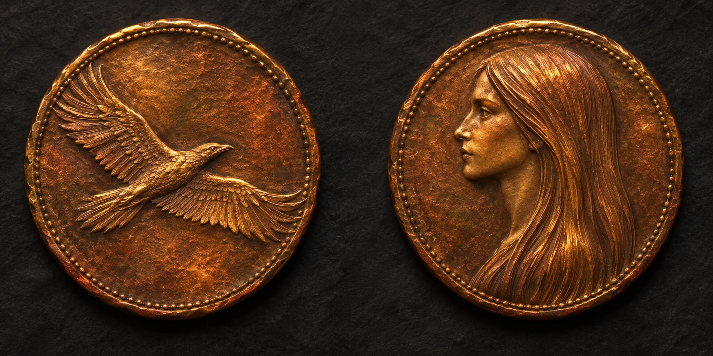

Gruppo 1 · Prequel facoltativo
Il carro al guado
Miniavventura per conoscersi al tavolo prima di L’Ombra su Watermire
Prima di giocare
Una breve sessione in solitaria o in coppia, utile per capire se giocatori e Master si trovano bene al tavolo. Dillo prima di cominciare. Si gioca come nella campagna: spazio ai personaggi e alle loro idee, con uno scontro breve. Spiega le regole man mano che servono.
1. Il carro al guado
Da leggere
Il carro è di traverso nel guado, a pochi passi dalla riva. Una ruota posteriore è spezzata e il cassone pende sull’acqua. Una donna con una mano fasciata tiene il mulo per le redini. Un ragazzo sulla riva agita le braccia.
«Non fatelo muovere! Mio fratello è ancora lì!»
Il mulo fa mezzo passo. Da dietro il cassone arriva uno spruzzo, poi una voce. «Mi tira lo stivale!» La donna pianta i piedi nel fango. «Lo tengo io. Ho una corda. Dove vuoi che la leghi?»
Che cosa è successo
Il guado è un tratto basso del fiume, senza ponte. Il carro era quasi fuori dall’acqua quando la ruota a valle ha ceduto. Il cassone si è inclinato e ora poggia contro un masso. Una borsa di medicinali è caduta. Il fratello maggiore è tornato indietro per recuperarla, è scivolato e il tacco dello stivale si è impigliato in una cinghia che pende dal cassone. È accanto al carro, non sotto la ruota. Ha la testa fuori dall’acqua e riesce a parlare. La donna, davanti al mulo, non lo vedeva.
Come gestire il soccorso
Il PG arriva dalla riva verso cui il carro stava uscendo. Da lì può avvicinarsi al ragazzo senza attraversare tutto il fiume. La corrente è abbastanza forte da far scivolare chi si avventura tra i sassi senza appigli. Sulla riva c’è un albero a cui fissare la corda. La carrettiera può calmare e tenere fermo il mulo. Il fratello minore non sa nuotare, ma può legare, lanciare o recuperare la corda dalla riva.
Descrivi la cinghia appena il PG vede il ragazzo. Può fargli sfilare lo stivale e tendergli la corda, usare la corda come appiglio e tagliare la cinghia, o proporre altro. Se ha messo in sicurezza il passaggio, non imporre un tiro. Se entra senza appiglio, una prova di Forza (Atletica) CD 10 basta per raggiungere il ragazzo. In caso di fallimento il PG perde piede, torna al basso fondale e può cambiare approccio. Evita di moltiplicare i tiri per la stessa idea.
Con due PG, dai a entrambi il tempo di agire. Uno può occuparsi della corda o del carro mentre l’altro parla con il ragazzo o lo aiuta a raggiungere riva. Se preferiscono lavorare insieme sullo stesso piano, va bene. Non far risolvere la scena a Nyarell.
2. Un lupo sulla riva
Da leggere
Il ragazzo è fuori dall’acqua. La donna ha appena sganciato il mulo dalle stanghe quando si spezza un ramo sulla riva. Un lupo esce dagli alberi. Fissa il mulo e abbassa la testa.
Tira iniziativa. Il lupo parte a circa 9 metri dal mulo. Punta l’animale, ma morde il PG che gli si mette davanti. La carrettiera porta via i ragazzi e non fa attacchi. I PG possono combattere, spaventare il lupo o far passare il mulo dietro di loro. Se un piano funziona, non servono altri round.
Lupo
Bestia Media, senza allineamento · GS base 1/4 (50 PE)
CA 12 · Iniziativa +2 · Velocità 12 m · PF base 11 (2d8 + 2)
| FOR | DES | COS | INT | SAG | CAR |
|---|---|---|---|---|---|
| 14 (+2) | 15 (+2) | 12 (+1) | 3 (−4) | 12 (+1) | 6 (−2) |
I tiri salvezza usano i modificatori indicati sopra. Abilità Furtività +4, Percezione +5. Sensi scurovisione 18 m, Percezione passiva 15. Linguaggi nessuno.
Tattiche di Branco. Il lupo ha vantaggio al tiro per colpire quando un suo alleato non incapacitato si trova entro 1,5 m dal bersaglio. Al guado è solo, quindi il tratto non si applica.
Morso. Attacco in mischia, +4 a colpire, portata 1,5 m. Se colpisce, infligge 5 (1d6 + 2) danni perforanti e il bersaglio cade prono se è di taglia Media o inferiore.
Adattamento per il guado. Usa 7 PF contro un PG e 11 PF contro due PG. Se ridotto a 3 PF o meno e ancora in piedi, al suo prossimo turno usa Disimpegno e fugge.
Se il lupo raggiunge e ferisce il mulo, l’animale si strappa di mano le redini e scappa verso il paese. Il lupo non insegue i ragazzi. Chiudi lo scontro quando l’animale selvatico fugge o quando persone e mulo sono ormai fuori dalla sua portata.
3. Il pane e la moneta
In paese qualcuno porta del pane caldo. Lascia che la scena rallenti. La donna chiede al ragazzo perché non l’abbia chiamata prima di tornare alla borsa. «Perché mi avevi detto che, se perdevo anche questa, non mi avresti più portato con te.» Lascia che i PG rispondano, facciano una domanda o ascoltino. Adatta la scena a ciò che hanno fatto, senza trasformarla in un verdetto sulle loro scelte.
Prima di congedarsi, la donna può ricordare a ognuno una cosa che ha fatto durante la giornata. Scegli un gesto accaduto davvero al tavolo. Poi consegna una moneta d’oricalco a ciascun PG. È l’ultima immagine del sogno. Non mostrare Nyarell per ciò che è e non spiegare la moneta.
Da leggere
La donna apre il palmo. C’è una moneta. Te la mette in mano e aspetta che tu chiuda le dita.

Dopo la partita
Chiedi al giocatore in quale momento il tuo modo di masterare lo ha aiutato a entrare nella scena e in quale avrebbe voluto che facessi qualcosa di diverso. Per capire se questo ritmo gli piace, chiedigli che cosa avrebbe voluto giocare ancora. Da parte tua, osserva come prende iniziativa, reagisce agli imprevisti e, in coppia, fa spazio all’altro. Non usare la conoscenza delle regole, l’estro nel recitare o la riuscita del soccorso come punteggio.